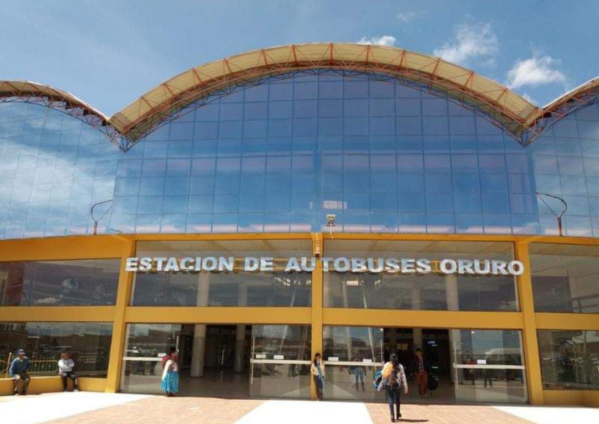
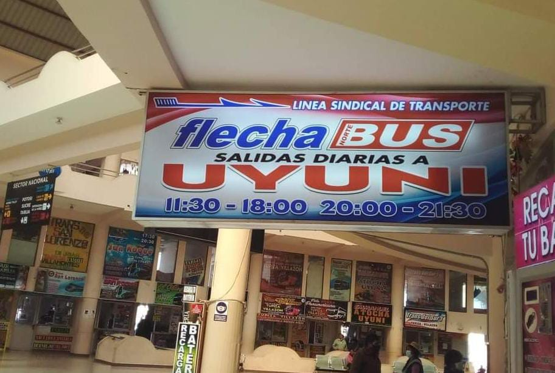

BIENVENIDOS
Ofrecemos una experiencia de viaje excepcional a través de algunos de los paisajes más impresionantes de Bolivia.
conocenoshistoria
El 11 de diciembre de 2011 fue una fecha trascendental en la historia del transporte interprovincial en Bolivia. En este día, Flecha Bus comenzó su andadura con una misión clara: ofrecer un servicio de transporte de alta calidad entre dos destinos clave del altiplano boliviano: Oruro y Uyuni. Desde sus inicios, la empresa se ha comprometido a proporcionar una experiencia de viaje cómoda, segura y confiable.
La empresa se encargó de brindar un servicio de transporte eficiente y confiable, cumpliendo con todos los requerimientos establecidos por el colegio. El traslado se llevó a cabo sin inconvenientes, y los participantes llegaron puntualmente al lugar del evento. Durante el trayecto, se destacó la amabilidad del personal de Flecha Bus, así como el buen estado y comodidad de los vehículos. En conclusión, la elección de Flecha Bus como proveedor de transporte resultó ser acertada, contribuyendo de manera significativa al éxito del evento. Se recomienda mantener esta colaboración para futuros traslados, dado el alto nivel de satisfacción obtenido.
Más información